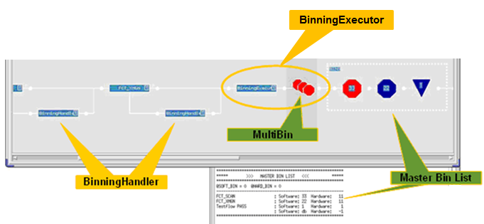

Test method sequence for driver-sharing test flows
Test methods for driver sharing have interdependencies regarding the sequence they are to be executed.
While test methods can, in general, be arranged according to the specific test requirements, the test flow must observe these conditions:
- The ResetOverCurrentProtection test method should be used first.
- If you perform online compensation (see OnlineCompensation test method for more information), it must be performed after continuity tests and before functional tests.
- The binning handler must be inserted into the "bad" branch of a test suite where it can collect the fails.
- The binning executor must be inserted at the end of the test flow as the last test suite before the multibins.
Example

Functional changes
- Introduced before SmarTest 6.3.2